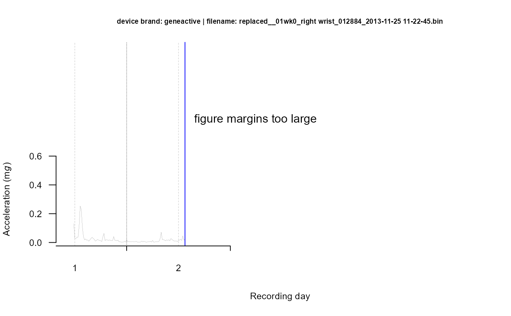

A package to process multi-day raw accelerometer data
GGIR-package.RdDisclaimer: If you are a new GGIR user then please see
package vignette
for an introduction to GGIR.
This document is primarily aimed at documenting the functions and their input arguments.
Please note that there is google discussion group for this package (link below).
You can thank us for sharing the code in this package and for developing
it as a generic purpose tool by citing the package name and by
citing the supporting publications (e.g. Migueles et al. 2019) in your publications.
Details
| Package: | GGIR |
| Type: | Package |
| Version: | 2.10-2 |
| Date: | 2023-09-01 |
| License: | Apache License (== 2.0) |
| Discussion group: | https://groups.google.com/forum/#!forum/rpackageggir |
Author
Vincent T van Hees <v.vanhees@accelting.com> main creator and developer
Zhou Fang developed calibration algorithm used in function g.calibrate
Joe Heywood helped develop the functionality to process specific recording days
Severine Sabia, Mathilde Chen, and Manasa Yerramalla extensively tested and provided feedback on various functions
Joan Capdevila Pujol helped to improve various functions
Jairo H Migueles <jairohm@ugr.es> helped to improve various functions
Matthew R Patterson helped with enhancing the visual report.
Lena Kushleyeva helped fix bug in sleep detection.
Taren Sanders helped tidy up the parallel processing functionality
References
Migueles JH, Rowlands AV, et al. GGIR: A Research Community-Driven Open Source R Package for Generating Physical Activity and Sleep Outcomes From Multi-Day Raw Accelerometer Data. Journal for the Measurement of Physical Behaviour. 2(3) 2019. doi:10.1123/jmpb.2018-0063.
van Hees VT, Gorzelniak L, Dean Leon EC, Eder M, Pias M, et al. (2013) Separating Movement and Gravity Components in an Acceleration Signal and Implications for the Assessment of Human Daily Physical Activity. PLoS ONE 8(4): e61691. doi:10.1371/journal.pone.0061691
van Hees VT, Fang Z, Langford J, Assah F, Mohammad A, da Silva IC, Trenell MI, White T, Wareham NJ, Brage S. Auto-calibration of accelerometer data for free-living physical activity assessment using local gravity and temperature: an evaluation on four continents. J Appl Physiol (1985). 2014 Aug 7
van Hees VT, Sabia S, et al. (2015) A novel, open access method to assess sleep duration using a wrist-worn accelerometer, PLoS ONE, November 2015
Examples
if (FALSE) {
#inspect file:
I = g.inspectfile(datafile)
#autocalibration:
C = g.calibrate(datafile)
#get meta-data:
M = g.getmeta(datafile)
}
data(data.getmeta)
data(data.inspectfile)
data(data.calibrate)
#impute meta-data:
IMP = g.impute(M = data.getmeta, I = data.inspectfile)
#analyse and produce summary:
A = g.analyse(I = data.inspectfile, C = data.calibrate, M = data.getmeta, IMP)
#plot data
g.plot(IMP, M = data.getmeta, I = data.inspectfile, durplot=4)
